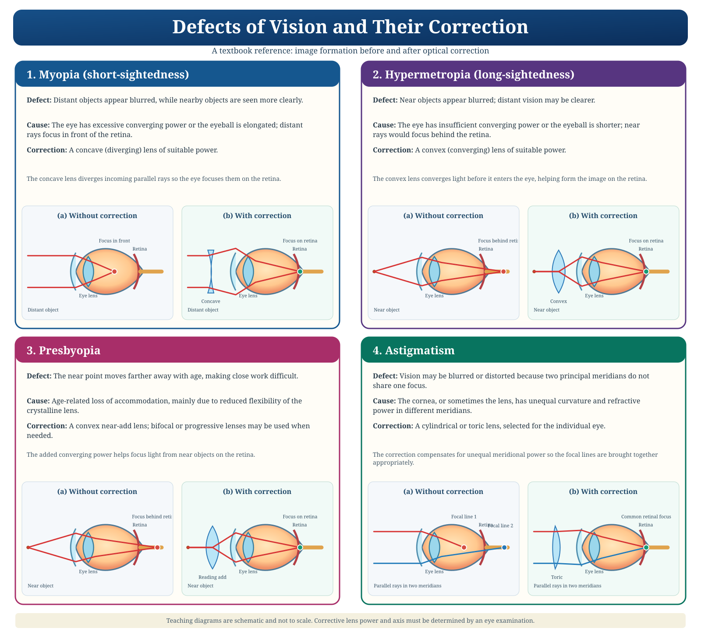

The cornea
Remember for exams
Drag to rotate · Scroll/pinch to zoom · Click numbered callouts to focus and identify structures
Understand the anatomy, revise important terms and check your understanding.
Try to answer from memory before revealing the explanation.
Eight questions covering eye anatomy and basic vision concepts.
Choose a condition, compare the image formation and discover how corrective lenses help.
Compare image formation without correction and the effect of the suitable corrective lens.

Reference plate: concave lens for myopia; convex lens for hypermetropia and near-vision correction in presbyopia; cylindrical or toric lens for regular astigmatism. Diagrams are conceptual and not to scale.
Conceptual teaching diagram; ray paths and proportions are schematic, not a clinical eye model or prescription calculator.
Choose one answer to check your understanding.
Search a term to see a student-friendly definition.
No matching term. Try another keyword.